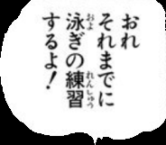

Speech bubble recognition and text extraction
This is a personal project that I worked on to automatically translate manga from Japanese to English.
The user can select a model by left clicking on it, and transform the camera or model by dragging it after choosing the Mode on the Animator Interface on the left.
To add a new keyframe, drag the Animator Interface > Time slider forward in time. Do a camera or model transformation. A new keyframe should appear on the list of keyframes in the Animator Interface.
To play the animation, select the t=0 keyframe. Press SPACE bar. The model or camera should move based on keyframe interpolation.
In the Model window on the right, the user can specify settings for the model, such as which laws of physics apply to the model, the color or texture, and the sound it makes.
Collision detection is optimized using bounding spheres. This broad phase algorithm checks if distance between centers > sum of radiuses. If it is, then it returns false. Otherwise, it runs the narrow phase algorithm
Narrow phase collision detection uses ray triangle intersection to checks every vertex and edge in this model to determine if ray(vertex, velocity) and ray(edge) intersect the faces of any other model.
If collision is detected, the model will bounce back according to 3D elastic collisions. The velocity is split into the component parallel to the colliding face and the component perpendicular to it. The parallel component of velocity remains unchanged after collision. The perpendicular component of velocity follows the conservation of momentum.
Texture mapping is done by mapping the pixels of an image to points on the model using the model's UV coordinates. Each vertex in the model has its own UV coordinates. The Fragment Shader interpolates the UV coordinate of the point being rendered and uses texture2D(textureMap, uv).rgb to get the color of the point based on the texture image.
Reflection and refraction mapping are similar to texture mapping, except it gets the color based on the reflected or refracted ray to the skybox. The reflected and refracted rays are calculated in th Vertex Shader by reflecting or refracting the line from the camera to the point. The skybox texture is passed to the Fragment Shader, which gets the color of the point based on where the ray hits.
Cel shading gives the scene a cartoonish look. This is done in the Fragment Shader by simply snapping the RGB values of each point to an interval before outputing it. If the color is between values a and b, set it to b.
Reflection and refraction mapping are similar to texture mapping, except it gets the color based on the reflected or refracted ray to the skybox. The reflected and refracted rays are calculated in th Vertex Shader by reflecting or refracting the line from the camera to the point. The skybox texture is passed to the Fragment Shader, which gets the color of the point based on where the ray hits.
{kind=link}